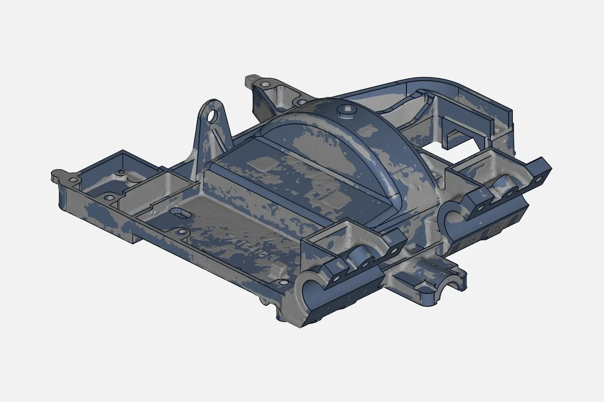

What you get
- An editable CAD model rebuilt from your part or your scan, as a STEP file.
- A dimensioned 2D drawing for a CNC shop, a fabricator or a printer, on request.
- A deviation check: a colour map of the model against the scan.
- A short note of what we measured, what we assumed, and what the scan could not reach.

Who is this for?
- Makers and hobbyists with a 3D printer who need a replacement for a broken or discontinued part.
- Hardware startups and product designers with a handmade prototype, a bought reference part or a mating part that has no CAD model.
- Engineering colleges and student teams that need a CAD model of a real component for analysis or a project report.
- Repair shops, CNC job shops and fabricators who were handed a sample and no drawing.
- Anyone with an STL from a scanner, phone app or download that will not edit, scale or machine.
The situations we hear, in your words
- "It broke and there is no model." The part is old or from a product that is no longer made, and nobody has a file. Keep every piece, including the broken one; the pieces help us rebuild the missing shape.
- "I only have a sample." A shop needs a drawing or a CAD file to quote and make from, and all you have is the part itself.
- "My STL will not edit." You cannot dimension it, change a hole, or send it to a machinist.
- "I need it bigger, smaller or mirrored." A left part when you have the right, or the same part at another size. This is easy to do on a clean CAD model and hard on a mesh.
- "I need a drawing for the CNC or the printer." The shop wants a dimensioned drawing or a STEP file, not a pile of triangles.
- "The model must match my real part, not the datasheet." Common for an enclosure designed around a bought component, where we model the real component.
A related use: hand-made pieces, such as a carved panel or a sculpted prototype, can be scanned and cleaned into a file for the next step. We do not promise machine toolpaths or hand-finish detail.
CAD from a sample, not just a converted mesh
A scan of a part is a mesh: a skin of triangles. Free converters can turn a mesh into a STEP file, but the result is usually a faceted shell that still cannot be edited like normal CAD. We instead build the model from the scan the way a designer would: sections, planes, holes, ribs and curves, so you can change a dimension and the model follows. We follow the design intent, so on a worn or broken part we rebuild the intended shape, not the wear.
How it works
- Send a photo, the part or your STL. A photo and the size are enough for a first reply. We say whether measuring is enough, whether a scan is worth it, or whether your shop can make it without us.
- We tell you what can be captured. Hidden internal faces, very small detail and difficult surfaces are discussed before we start.
- Scan or read your scan. Small parts can be sent to our Coimbatore facility. Larger parts are scanned where they stand. If you send an STL, send the raw file and tell us the units.
- Rebuild as CAD. We build the editable model, with datums and the dimensions that matter to you. If the part has a mating part, send it too, because it shows which dimensions are critical.
- Check against the scan. We compare the model to the scan and show the result as a colour map before anything is made.
- Deliver. You get the STEP file, a drawing on request, and the notes. You print, machine or cast it, or send it to your own supplier.
What to send
- Photos of the part from several sides, with something in the frame for scale.
- The part itself, including broken pieces, if you can send it. Small parts can be sent to our Coimbatore facility.
- Your STL, OBJ or PLY file, as exported from the scanner, with the units. Please do not reduce the file first.
- The mating part, or a photo of where the part fits.
- Which dimensions matter most (a hole spacing, a diameter, a surface that touches another part), and which can be loose.
- What it is for: printing, machining, casting, a drawing, a redesign, analysis.
- The material, if you know it, and how many pieces you need.
- Your deadline.

What you receive
| Deliverable | What it is for |
|---|---|
| Editable CAD model (STEP; IGES or Parasolid on request) | Opens in your own CAD software; CNC machining, casting, 3D printing, redesign |
| 2D drawing with dimensions and datums (on request) | A shop, fabricator or printer can quote and make from it |
| Deviation check (colour map of the model against the scan; PDF on request) | Shows how the model sits on the scan before anything is made |
| STL or PLY mesh (on request) | Reference, 3D printing and visual checks |
| Notes: what was measured, what was assumed, what could not be reached | Lets you check the open points on the real part |
Fits and tolerances are agreed with you per part. Our inspection reports are normally delivered in 2 to 3 days; for a rebuild we confirm the time after seeing the part or the scan. We quote per job and do not publish a price list. File types are explained in what files you get from a 3D scan.

Honest limits
- Hidden internal faces. A scan sees what the scanner can see. Deep holes, closed cavities and inside faces may not be captured. We list them, and you check them on the real part.
- Very small detail. Fine text, knurling, sharp micro-features and very small parts may not come through. Tell us the smallest detail that matters.
- Soft, shiny and transparent parts. Flexible, reflective, dark or clear parts need special handling and are discussed before we start. We make no promise until we have seen the part.
- A poor STL. If your scan has holes, noise or missing areas, we say so before work starts. We cannot add detail that the scan never captured.
- Wear. A worn or broken part is not its original shape. We rebuild the intended shape and agree the fit with you.
- Tolerance. We do not promise a tolerance from a sample alone. Fits are agreed once we have seen the part and its job.
- Material. We cannot tell the material or heat treatment from a scan. Tell us if you know it.
- Medical and clinical parts. We do not take medical, implant or clinical work.
- Making the part. We deliver the model and drawings. You print, machine or cast it, or use your own supplier.
A note on ownership
Before a part is scanned or rebuilt, make sure you own the design or are allowed to make the part. For your own part, product or prototype, that is usually clear. If a patent, licence or supply agreement protects the part, check the position first. We work for customers who own the part or may reproduce it, and we may ask you to confirm this. The CAD files we deliver to you are yours.
Part of a wider service
If the problem is a machine part with no drawing, see machine and plant drawings from existing parts and how we rebuild a spare part with no drawing. If the part is for a vehicle accessory, see accessory and body-part fitment CAD from a scanned vehicle. To print the result, see 3D printing from your scan. All of this is part of our 3D scanning services in India.
Send a photo or your STL. Tell us what the part is for and which dimensions matter, and we reply with what is needed and a written quote. Send a photo or your STL or WhatsApp / call +91 95142 48525, info@vsharksolutions.com. Please say how you found us (what you typed in Google or where you saw us) so we can improve this page.
Last reviewed: